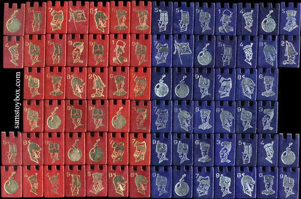
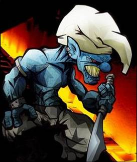
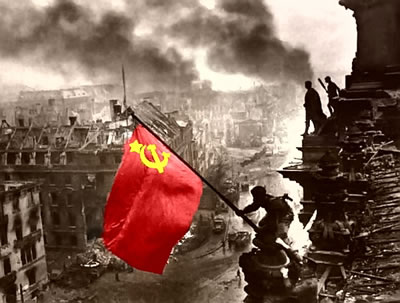

Stratego
 De: La Frikipedia, la enciclopedia extremadamente seria.
De: La Frikipedia, la enciclopedia extremadamente seria.

|
ATENCIÓN
El autor de este artículo se ha olvidado de enlazar otros artículos y ha perpetrado un Deadend.
Hay que editar el artículo para que enlace a otros artículos.
|
 Si lo miras fijamente durante dos horas empezaran a parecerte soldaditos
Juego de mesa que suele ser usado para zanjar partidas de Risk, muy facha, que se desarrolla en los cerros de Úbeda y parte de Prusia donde Los pitufos y Los Comunistas se meten caña. En si no es mas que una mezcla de ajedrez y Risk para cuando no quieres, ni morirte del asco jugando dos años una partida de Risk ni quieres quedar como un palurdo cuando te hagan un jaque pastor en tres movimientos. Favorito del alcalde Adam West
De que va
El juego esta inspirado en la operación Barba-azul del ejercito fascista pitufo que intentó conquistar la URSS a finales de los 30 (o eso nos han hecho creer los libros). Se supone que tomas el control de uno de los dos bandos.
Preparación
 General pitufo con serios problemas mentales
Al principio de la partida, coges el tablero (es necesario haber comprado el juego y haberle quitado el precintito ese tan mono) y lo abres. Luego, eliges entre azul y rojo (Pitufos o Comunistas) y coges tus fichitas.
Cada ficha tiene un numerito (y si no lo has comprado en el chino, seguramente también dibujitos) del 1 al 10. Si tienes un mínimo de imaginación (cosa dudosa), te imaginas que esas especies de tiendas de campaña de la época de Napoleón son soldados (Si un trozo de plástico con forma de soldado lo consigue ¿Porque no únicamente un trozo de plástico?). Tu ejercito de Pitufos o Comunistas es en si, una mierda, pero cuentas con las siguientes tropas:
- Un mariscal anormal (Si coges a los pitufos será Papa pitufo y si coges rojos será Stalin)
- Un general paranoico que deja a Paton por los suelos.
- Dos coroneles que juegan al teto, pero eso solo en el Stratego para mayores de 18 años (de venta en sex shops)
- Tres comandantes que se montan una orgía con la mujer del general (si eliges a los pitufos, se tirarán a la pitufina)
- Cuatro capitanes que beben como cosacos
- Cuatro tenientes que se metieron en el ejercito a ligar (quien les diría que no había mas mujer que la del general)
- Cuatro sargentos que tienen una tuna
- Cinco desativabombas, artificieros, minadores, artilleros, mineros o como coño los quieras llamar que como mínimo tienen una extremidad menos (la mayoría perdieron el pene)
- 8 boy scouts fachas que se alistaron en el ejercito después de pasar por el reformatorio cristiano-militar Millan Astray listos para una misión suicida
- Un espia, que no es James Bond precisamente, pero que algo hace.
- Seis bombas a base de lejía que montaron los Scouts en clase de manualidades
- LA BANDERA, si cae, has perdido (¡¿Quién inventó este juego, Franco?!)
Lo que es la partida en si
Bien, aprovechando ese ejercito de mierda que reclutaste en la cola del paro, tienes que proteger tu BANDERA y coger la del otro para quemarla y llamar putos perros de mierda (esto último solo para niños llamados Adolfito)
Para ello te puedes ir cargando al enemigo.
La cosa es poner la bandera en un lugar protegido (no idiota, no vale meterla en la caja fuerte). Para ello, tienes que poner a tu ejercito alrededor.
 Los pitufos destuyendo la bandera de los rojos
Como estos dos ejércitos son un tantín crueles, las mejores armas se las llevan los que mas alto han subido. Así por ejemplo los scouts tienen un tirachinas y el mariscal un lanzagranadas con mira térmica y detector de movimiento.
Como tu ejercito está lleno de vagos, solo se mueven una casillita cada turno. Bien, la cosa es simple, las tropas avanzan hasta que una esta enfrente de la otra. Entonces (combate poquemon) te puedes dar de hostias. La cosa es la siguiente, tu no tienenes ni idea del numerito del otro y el otro no tiene ni idea de tu numerito, así que es plan: Un, dos, tres. Uno saca un revolver y el otro un tirachinas. Boom, al scout le vuelan la cabeza y a otra cosa mariposa.
La cosa sigue así hasta que uno de los dos bandos llega hasta la bandera y la destruye, da igual con que arma.
Reglas
- Los Scout, que son muy listos (son fascistas, así que dentro de lo que cabe) pueden atacar si hay una casilla de distancia. Como son los peores soldados del juego, se usan mas como Kamikaces para saber la ficha del atacante que para defender.
- La bandera y las minas de legía no se mueven. La bandera porque pesa un huevo y las minas porque son mas inestables que un elefante encima de una pelota de baloncesto.
- Las minas hacen mierda a cualquiera que las pise( o tenga los huevos de atacarlas) excepto al artificiero con armadura protectora como los de En tierra hostil, y extrañamente explotan tantas veces como personas las pisan. Si un minador las pisa, como van mas mazaos que un furgón blindado, sencillamente las hacen mierda.
- En medio del tablero hay dos charcos. A no ser que tu ejercito disponga de traje de baño, no puedes pasar por ahí.
- El espía es el único que puede cargarse al mariscal anormal, ya que tiene fotos del mariscal en la despedida de soltero del general tirándose a un perro. Una mina en la huevada también funciona.
Estrategias mas típicas
- Rodear la bandera de minas. Fallo que le veo, si haces esto una vez, bravo por ti. Si lo haces mas de una, date por muerto, porque en cuanto descubran donde tienes una mina, saben donde estará la bandera.
- Liar las fichas. Vas con un artificiero y el mariscal. Viene un teniente que dice: “Me cargo al minador y a correr”. Entonces coges y haces un fus fas trakatrratas y con dos movimientos has puesto al minador detrás y delante al mariscal. ¿Resultado? Teniente frito.
- Pedirle al otro un vaso de agua al contrincante y como un vil canalla hacer mas trampa que Hittler con el pacto Antikominter.
Autor(es):
- Kevrochi
- Genericool
- Dancob
- Henry Hart
- ProfetaAesedefiano
- Cris440
- Likan003
Frikipedia 2005-2016, Licencia
GFDL 1.2 - Extraído por FrikiLeaks